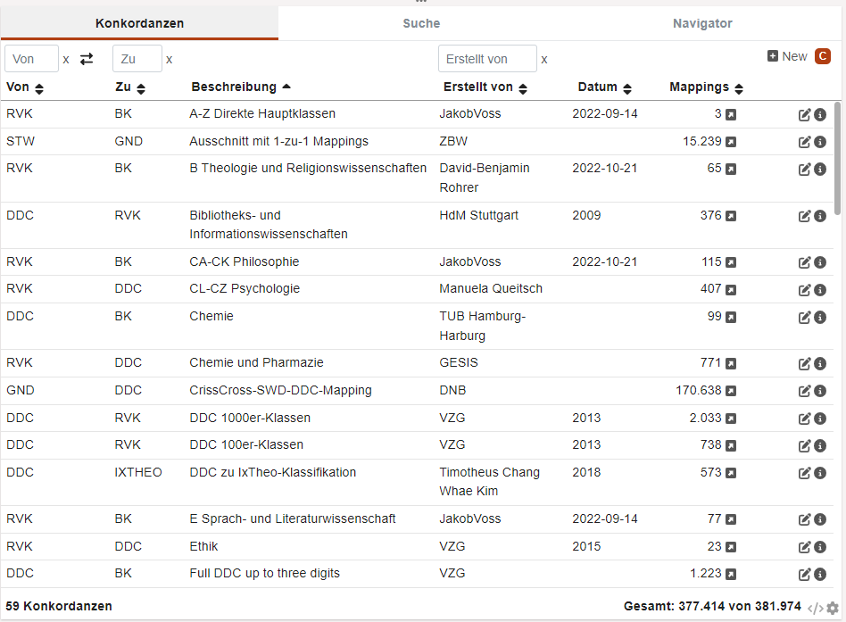

Cocoda-Benutzerhandbuch
version 1.8.1 (2022-12-06)
Einleitung
Dieses Handbuch gibt eine kurze Einführung in die wichtigsten Bestandteile von Cocoda. Die Webanwendung zur Erstellung und Verwaltung von Mappings zwischen Wissensorganisationssystemen (Klassifikationen, Normdaten, Thesauri…) wird als Teil des Projekt coli-conc an der Verbundzentrale des GBV (VZG) gepflegt. Die Anwendungsfälle von Cocoda reichen vom Mapping eigener Systematiken auf etabliertere Vokabulare über die Erstellung von Mappings zur Verbesserung des Retrieval in Katalogen und Discovery-Systemen bis hin zur Sammlung von Mappings in Wikidata als zentralem Normdaten-Hub.
Unter https://coli-conc.gbv.de/cocoda/ sind mehrere Anleitungen, Screencasts sowie unterschiedlich konfigurierte Instanzen von Cocoda verlinkt, darunter:
- die aktuelle Release-Version: https://coli-conc.gbv.de/cocoda/app/
- die aktuelle Entwicklungsversion: https://coli-conc.gbv.de/cocoda/dev/
Je nach Konfiguration der Cocoda-Instanz können einige der hier beschriebenen Features nicht verfügbar sein.
Benutzeroberfläche
Empfohlen wird als Browser Firefox oder Chromium und ein Bildschirm mit mindestens Full HD-Auflösung (1920×1080). Die Benutzeroberfläche lässt sich über die Einstellungen anpassen; unter Anderem kann die Sprache geändert werden.
Die Menüleiste enthält (je nach Konfiguration):
- Logo und Name der jeweiligen Cocoda-Instanz
 Links-Rechts-Pfeile zum Wechseln der Mapping-Richtung
Links-Rechts-Pfeile zum Wechseln der Mapping-Richtung- Links auf Impressum, Datenschutzerklärung, Anleitung und Feedback-Möglichkeit
- Mülleimer zur Ansicht und zum Wiederherstellen der zuletzt gelöschten Mappings
 Schnellauswahl von gemerkten Konzepten
Schnellauswahl von gemerkten Konzepten Benutzeraccount und -name. Nach erfolgreichem Login wird der Benutzername fett markiert und per Schnellauswahl lässt sich die Identität zur Speicherung von Mappings und Bewertungen wechseln
Benutzeraccount und -name. Nach erfolgreichem Login wird der Benutzername fett markiert und per Schnellauswahl lässt sich die Identität zur Speicherung von Mappings und Bewertungen wechseln Einstellungen mit Schnellauswahl der Datenbank in die Mappings und Bewertungen gespeichert werden
Einstellungen mit Schnellauswahl der Datenbank in die Mappings und Bewertungen gespeichert werden
Der restliche Bildschirm ist in drei Bereiche mit mehreren Komponenten aufgeteilt:
- Komponenten zur Auswahl von Vokabularen und Konzepten Links und Rechts
- Komponenten zur Auswahl, Erstellung und Bearbeitung von Mappings in der Mitte
Beim Start von Cocoda sind zunächst nur die Komponenten zur Vokabularauswahl geöffnet während in der Mitte allgemeine Hinweise angezeigt werden. Die Größe einzelner Komponenten lässt sich mit den Punkten bzw.  ändern, das Minimieren-Icon
ändern, das Minimieren-Icon  blendet eine Komponente aus. Darüber hinaus haben einige Komponenten rechts unten Icons zur:
blendet eine Komponente aus. Darüber hinaus haben einige Komponenten rechts unten Icons zur:
- Einstellung des Verhaltens der Komponente
 Detailansicht der in einer Komponente angezeigten Daten und Quellen
Detailansicht der in einer Komponente angezeigten Daten und Quellen
Benutzeraccounts
Grundätzlich verwaltet Cocoda keine eigenen Benutzeraccounts. Die Einstellungen werden daher auch nur im Browser gespeichert. Zum Login können vorhandene Accounts bei externen Diensten verwendet werden:
- ORCID
- Wikimedia (Wikipedia, Wikidata…), GitHub und StackExchange
- LDAP (nur VZG-intern)
Diese externen Accounts heißen in Cocoda Identitäten. Die jeweils ausgewählte Identität und der dazugehörige Nutzername werden nach erfolgreichem Login in der Menüleiste angezeigt und können dort gewechselt werden. Weitere Details sind in den Einstellungen unter “Accounts” einsehbar. Ob und mit welcher Identität Cocoda Nutzerbeiträge öffentlich einsehbar abspeichert, können Nutzer selber entscheiden:
- Ist die personenbezogene Zuordnung von Beiträgen gewünscht, empfehlen wir ORCID- oder Wikimedia-Identitäten auszuwählen
- Andernfalls wird ein Account-Identifier verwendet dessen Zuordnung zu Identitäten nur den Adminstratoren der Mapping-Datenbank bei der VZG einsehbar ist
Ohne Login lassen sich Mappings nur lokal im eigenen Browser speichern. Diese Funktion ist der Übersichtlichkeit halber in einigen Cocoda-Instanzen allerdings abgestellt.
Vokabulare und Konzepte
Cocoda ermöglicht den einheitlichen Zugriff auf eine Vielzahl von Vokabularen von unterschiedliche Datenquellen. Ein Vokabular besteht aus Konzepten und Informationen über das jeweilige Vokabular. Die Anzeige von Vokabularen und Konzepten auf der linken bzw. rechten Seite besteht aus Komponenten für:
- Auswahl von Quell- bzw. Zielvokabular
- Ansicht von Informationen über ein ausgewähltes Vokabular
- Suche nach Konzepten im ausgewählten Vokabular
- Ansicht von Informationen über ein ausgewähltes Konzept
- hierarchisches Browsing im ausgewählten Vokabular (falls vorhanden)
- Ansicht von Konzeptlisten (falls vorhanden)
Vokabularauswahl
Die Auswahl eines Vokabular ist per Titelsuche und über die Vokabular-Liste möglich. Über das Filter-Icon kann die Liste nach Quelle, Sprache, Vokabular-Typ und Favoriten eingeschränkt werden. Ist das Filter-Icon mit einem Punkt markiert so ist ein Filter aktiv. Mit dem Stern  lässt sich ein Vokabular als Favorit aus- bzw. abwählen. Die Favoriten werden immer zuerst angezeigt. Nach Auswahl eines Vokabulars erscheint ein Suchfeld und es werden Informationen über das Vokabular angezeigt. Mit dem Kreuz
lässt sich ein Vokabular als Favorit aus- bzw. abwählen. Die Favoriten werden immer zuerst angezeigt. Nach Auswahl eines Vokabulars erscheint ein Suchfeld und es werden Informationen über das Vokabular angezeigt. Mit dem Kreuz  hinter dem Vokabularnamen lässt sich das Vokabular abwählen. Zum schnellen Zugriff auf die Vokabularauswahl gibt es die Tastaturkürzel
hinter dem Vokabularnamen lässt sich das Vokabular abwählen. Zum schnellen Zugriff auf die Vokabularauswahl gibt es die Tastaturkürzel Ctrl+Shift+f (links) und Ctrl+Shift+g (rechts).
Vokabulardetails
Diese Komponente zeigt Vokabular-Informationen wie Identifier, Erstellungsdatum, Lizenz, Herausgeber, Vokabulartypen und Datenquelle an. Wenn die Baumansicht minimiert ist, werden hier außerdem die Oberkonzepte angezeigt. Der Link auf  vorhandene Mappings öffnet die Mapping-Suche.
vorhandene Mappings öffnet die Mapping-Suche.
Suche nach Konzepten
Im Suchfeld lassen sich Konzepte per Notationen oder Bezeichnung suchen. Die Komponente lässt sich so konfigurieren, dass bei Auswahl eines Konzepts auf der gegenüberliegenden Seite autmatisch dessen Benennung im Suchfeld eingetragen wird. Einige Vokabulare bieten die Filterung nach Konzept-Typ an: neben dem Suchschlitz steht dann ein Filter-Icon . Zum schnellen Zugriff auf die Konzeptsuche gibt es die Tastaturkürzel Ctrl+f (links) und Ctrl+g (rechts).
Durch Suche nach einer syntaktisch korrekten Notation lässt sich ein Konzept auswählen auch wenn zu dieser Notation kein Konzept gefunden wurde. Solche unbekannten Konzepte werden mit einem roten Punkt (•) gekennzeichnet.
Konzeptdetails
Nach Auswahl eines Konzepts werden statt Vokabulardetails Informationen zum ausgewählten Konzept angezeigt. Neben Ober- und Unterklassen (falls vorhanden):
- Info: Metadaten wie Identifier und Änderungsdatum
- Bezeichnungen: Vorzungs- und Alternativbenennungen
- Scope/Editorial: Verwendungshinweise und Beschreibungen
- Suchlinks: konfigurierbare Links in andere Datenbanken (Wikipedia, K0plus…)
Der Stern  fügt das Konzept zur Schnellauswahl-Liste hinzu bzw. entfernt es daraus. Das Plus-Zeichen
fügt das Konzept zur Schnellauswahl-Liste hinzu bzw. entfernt es daraus. Das Plus-Zeichen  dient dazu das Konzept in den Mapping-Editor zu übernehmen. Der Pfeil
dient dazu das Konzept in den Mapping-Editor zu übernehmen. Der Pfeil  wählt das nächste Konzept in der Baumansicht oder aus der aktuell ausgewählten Liste aus. Zum schnellen Wechsel gibt es für diese Aktion die Tatstaturkürzel
wählt das nächste Konzept in der Baumansicht oder aus der aktuell ausgewählten Liste aus. Zum schnellen Wechsel gibt es für diese Aktion die Tatstaturkürzel Alt+n (links) und Alt+m (rechts).

Baumansicht
Neben der Browsing-Möglichkeit über Vokabulardetails und Konzeptdetails wird für monohierarchischen Vokabularen eine  Baumdarstellung angeboten.
Baumdarstellung angeboten.

Listenansicht
Statt der Baumansicht können über ein Popup  die Liste von Schnellauswahl-Konzepten
die Liste von Schnellauswahl-Konzepten  sowie je nach Konfiguration weitere Konzept-Listen
sowie je nach Konfiguration weitere Konzept-Listen  ausgewählt werden. Die Aktualisierung zusätzlicher Listen erfolgt erst durch Neu-Laden mit dem Aktualisieren-Icon
ausgewählt werden. Die Aktualisierung zusätzlicher Listen erfolgt erst durch Neu-Laden mit dem Aktualisieren-Icon  .
.
Mappings
Die Hauptaufgabe von Cocoda liegt in der Erstellung, Bearbeitung, Suche und Bewertung von Mappings. Ein Mapping ist eine gerichtete Verbindung zwischen einem Konzept und einer Menge von Konzepten aus einem gemeinsamen Vokabular. Zur Auswahl, Erstellung und Bearbeitung von Mappings werden in der Mitte der Benutzeroberfläche zwei Komponenten angeboten:
- Mapping-Editor zum Erstellen und Bearbeiten von Mappings
- Mapping-Browser bestehend aus Bereichen für Konkordanzen, Suche und [Navigator] für Suche, Browsing und Bewertung von Mappings und Mapping-Vorschlägen
Mappings können außerdem je nach Konfiguration mit Bewertungen versehen werden. Mappings und Bewertungen können in verschiedenen Mapping-Datenbanken gespeichert werden.
Mapping-Editor
Der Mapping-Editor dient der detaillierten Bearbeitung eines Mappings. Dazu können Konzepte per Drag und Drop in den Mapping-Editor gezogen oder mit dem Plus-Icon  von der linken oder rechten Seite übernommen werden. Zum Übernahme des jeweils ausgewählten Konzepts gibt es außerdem Tastaturkürzel (
von der linken oder rechten Seite übernommen werden. Zum Übernahme des jeweils ausgewählten Konzepts gibt es außerdem Tastaturkürzel (Ctrl+a bzw. Ctrl+d). Mit dem Kreuz  kann ein Konzept wieder entfernt werden.
kann ein Konzept wieder entfernt werden.
In den Einstellungen des Editors kann festgelegt werden nur 1-zu-1 Mappings zu erlauben; ansonsten kann ein Konzept auch auf eine Kombination mehrerer Zielkonzepte gemappt werden (UND-Verknüpfung). Für mehrere alternative Zielkonzepte (ODER-Verknüpfung) sollten stattdessen mehrere Mappings angelegt werden. Darüber hinaus sind Null-Mappings möglich wenn ein Konzept keine Entsprechung im Ziel-Vokabular hat.
Der Editor zeigt an, ob und in welcher Datenbank ein Mapping gespeichert wurde bzw. gespeichert werden soll. Am unteren Rand des Editors stehen folgende Aktionen bereit:
- Quell- und Zielkonzept des Mappings vertauschen
 Mapping speichern (Tastaturkürzel
Mapping speichern (Tastaturkürzel Ctrl+s)- Mapping löschen
 Mapping duplizieren um ein neues Mapping mit gleichem Inhalt zu erstellen
Mapping duplizieren um ein neues Mapping mit gleichem Inhalt zu erstellen Mapping leeren um ein neues Mapping zu erstellen (
Mapping leeren um ein neues Mapping zu erstellen (Ctrl+Shift+c)
Nach dem Speichern wird der Editor geleert, um ein Überschreiben des gespeicherten Mappings zu vermeiden; dieses Verhalten kann in den Einstellungen geändert werden.
Links unten im Editor steht wer das Mapping erstellt hat bzw. bei neuen Mappings mit welchem Benutzernamen das Mapping gespeichert wird. In der Mitte des Editors kann die Art des Mappings ausgewählt werden. Folgende Mapping-Typen stehen zur Auswahl:
- = exakte Übereinstimmung: gleiche Bedeutung
- ≈ hohe Übereinstimmung: in etwa gleiche Bedeutung
- > allgemeinere Bedeutung (z.B. Über- zu Unterordnung)
- < spezifischere Bedeutung (z.B. Teil-Ganzes-Beziehung)
- ~ verwandte, assoziative Verknüpfung
- → allgemeine Mapping-Relation mit unbekanntem Bedeutungszusammenhang
Falls für die ausgewählte Kombinationen von Quell- und Zielvokabular Hinweise zum Mappingvorgang konfiguriert sind, werden diese über ein Hilfe-Info  aufrufbar.
aufrufbar.
Konkordanzen
Der erste Bereich der Mapping-Browser-Komponente listet Konkordanzen auf, in denen Mappings koordiniert gesammelt wurden.1 Die Konkordanzen können nach Quell- und Zielvokabular und nach Herausgeber gefiltert werden. Das Link-Icon  öffnet die Mapping-Suche mit Filter auf der jeweiligen Konkordanz.
öffnet die Mapping-Suche mit Filter auf der jeweiligen Konkordanz.

Mapping-Suche
Die Mapping-Suche bietet eine Metasuche nach Mappings in vorhandene Datenquellen. In der Erste Zeile des Suchformulars können folgende Filter angegeben werden:
- Quell-Vokabular
- Quellnotation oder -URI
- Ziel-Vokabular
- Zielnotation oder -URI
Vokabulare und Konzepte lassen sich auch per Drag & Drop in die Suchfelder eintragen.
Mit dem Schloss-Icon  bzw.
bzw.  kann festgelegt werden dass immer automatisch das per Vokabularauswahl gewählte Quell- bzw. Zielvokabular verwendet werden soll. Über das Filter-Icon werden weitere Suchmöglichkeiten angeboten:
kann festgelegt werden dass immer automatisch das per Vokabularauswahl gewählte Quell- bzw. Zielvokabular verwendet werden soll. Über das Filter-Icon werden weitere Suchmöglichkeiten angeboten:
- Autor/Autorin
- Mapping-Typ
- Konkordanz
- Bidirektionale Suche (Quell- und Ziel- auch vertauscht suchen)
- Mapping-Datenbanken in denen gesucht werden soll
Sollte die Suche keine oder zu wenige Ergebnisse liefern kann es sein dass zu viele Filter gesetzt sind. Der Leeren-Button  setzt alle Filter zurück. Das Share-Icon
setzt alle Filter zurück. Das Share-Icon  beinhaltet die URL auf die aktuelle Suche um diese als Bookmark zu speichern oder weiterzugeben.
beinhaltet die URL auf die aktuelle Suche um diese als Bookmark zu speichern oder weiterzugeben.
Die Ergebnisliste der Mapping-Suche ist nach Datenquellen unterteilt und entspricht der Ansicht im Mapping-Navigator. Die einzelnen Quellen können durch Klick auf ihren Namen ein- und ausgeblendet werden.
Mapping-Navigator
Im Mapping-Navigator werden aus verschiedenen Datenquellen Mappings und Mapping-Vorschläge angezeigt die zu den links bzw. rechts ausgewählten Konzepten passen. Zu welchen Konzepten und Vokabularen Mappings im Navigator berücksichtigt werden sollen, kann in den Einstellungen festgelegt werden. Die einzelnen Datenquellen lassen sich durch Klick auf ihre Kürzel ein- und ausblenden. Datenquellen in die geschrieben werden kann sind mit einem Stift  markiert. Zu jedem Mapping bzw. Mapping-Vorschlag werden angezeigt:
markiert. Zu jedem Mapping bzw. Mapping-Vorschlag werden angezeigt:
- Quellvokabular und -Konzept
- Mapping-Typ
- Zielvokabular und -Konzept
- Erstellt von wem und wann
Sowie je nach Einstellungen:
- Bewertungen
- Detailinformationen zum Mapping
 Mapping bearbeiten
Mapping bearbeiten- Mapping oder Vorschlag in den Mapping-Editor kopieren
- Mapping-Vorschlag speichern
- Mapping löschen
Bewertungen
Grundsätzlich sind zwei Arten von Bewertungen möglich, wobei es von der Konfiguration abhängt wer welche Bewertungen abgeben kann:
- Bewertung durch Zustimmung bzw. Widerspruch

- Bewertung durch Bestätigung
 (in der Regel nur für ausgewählte Accounts)
(in der Regel nur für ausgewählte Accounts)
Zustimmungen und Ablehnungen werden als +1 bzw. -1 gewertet und in ihrer Summe angezeigt. Bei Bestätigungen reicht eine Bewertung damit statt der Summe ein Haken  angezeigt wird. Alle Bewertungen erfolgen Benutzerbezogen, es ist also einsehbar wer wann welche Bewertung abgegeben hat. Eigene Bewertungen können wieder entfernt werden.
angezeigt wird. Alle Bewertungen erfolgen Benutzerbezogen, es ist also einsehbar wer wann welche Bewertung abgegeben hat. Eigene Bewertungen können wieder entfernt werden.
Einstellungen
Ein Klick auf den Benutzernamen in der Menüleiste öffnet die Einstellungen. Darüber hinaus können einige Komponenten mit dem Icon  konfiguriert werden. Da Cocoda keine Benutzeraccounts verwaltet werden die Einstellungen nur lokal im Browser gespeichert. Die Einstellungen sind in Bereiche unterteilt:
konfiguriert werden. Da Cocoda keine Benutzeraccounts verwaltet werden die Einstellungen nur lokal im Browser gespeichert. Die Einstellungen sind in Bereiche unterteilt:
- Account: Identität zur Speicherung von Mappings und Bewertungen
- Datenquellen: Übersicht aller verfügbaren Datenquellen
- Oberfläche: Einstellungen zur Benutzeroberfläche wie die Sprache
- Tastaturkürzel: vorhandene Tastaturkürzel
- Lokale Mappings: Import und Export von im Browser gespeicherten Mappings
Datenquellen
Cocoda greift als reine Webanwendung auf alle Informationen über Web-Schnittstellen (APIs) zu. Die Daten und API-Aufrufe sind jeweils über das Quelltext-Icon  erreichbar. Die je nach Instanz konfigurieren Datenquellen sind in den Einstellungen einsehbar.
erreichbar. Die je nach Instanz konfigurieren Datenquellen sind in den Einstellungen einsehbar.
Mapping-Datenbanken
Mapping-Datenbanken dienen der Speicherung von Mappings und Bewertungen. Die jeweils ausgewählte Datenbank ist gelb hinterlegt und kann über die Menüleiste oder durch Klick auf den Namen der Datenbank im Mapping-Browser ausgewählt werden. Die meisten Instanzen enthalten diese Datenbanken:
- L Lokal: Mappings werden im Browser gespeichert
- C Konkordanz-Register: öffentliche Datenbank aller im Projekt coli-conc gesammelten Mappings und Bewertungen
- W Wikidata-Mappings: Lese- und Schreibzugriff auf Mappings in Wikidata
Weitere Datenquellen
Vokabulare und Mapping-Vorschläge können per JSKOS-API, per Skosmos-API und per OpenRefine Reconciliation API in eine Cocoda-Instanz eingebunden werden. Das Hinzufügen weiterer Datenquellen über die Benutzeroberfläche ist bislang nicht möglich.
Export und Import
Zum Export verwenden sie das das Quelltext-Icon  um Daten in JSKOS und CSV-Format herunterzuladen bzw. API-Aufrufe zum Abruf der Daten zu ermitteln.
um Daten in JSKOS und CSV-Format herunterzuladen bzw. API-Aufrufe zum Abruf der Daten zu ermitteln.
Zusätzliche Vokabulare, Mappings und Mapping-Vorschläge können durch entsprechende Konfiguration einer Cocoda-Instanz in die Anwendung eingebunden werden. Bitte setzen Sie sich bei Fragen dazu mit uns in Verbindung (http://coli-conc.gbv.de/contact/).
Der Massenimport von Mappings ist über die Weboberfläche bislang nur in der Datenbank L Lokal möglich.
Weitere Informationen
Weitere Informationen, Anleitungen, Screencasts u.v.m. finden sich über die Projekthomepage https://coli-conc.gbv.de/. Für Fragen und Rückmeldungen zur Software benutzen Sie am Besten den GitHub IssueTracker.
Die in Cocoda verwendeten Icons stammen von fontawesome und sind unter CC BY 4.0 lizensiert.
Siehe auch http://coli-conc.gbv.de/concordances/ für eine Übersicht↩